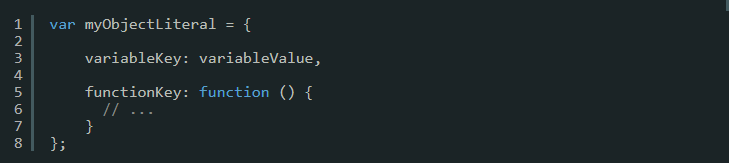
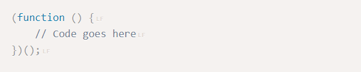

«Модуль» — это популярная реализация паттерна, инкапсулирующего приватную информацию, состояние и структуру, используя замыкания. Это позволяет оборачивать публичные и приватные методы и переменные в модули, и предотвращать их попадание в глобальный контекст, где они могут конфликтовать с интерфейсами других разработчиков. Паттерн «модуль» возвращает только публичную часть API, оставляя всё остальное доступным только внутри замыканий.
В JavaScript существует несколько вариантов реализации модулей. К ним относятся:
Объект - это набор разделенных запятыми пар имя / значение, заключенных в фигурные скобки ({}).
главное воплощение этого стандарта — модульная система Node.js. Характеристики:
Наиболее популярной реализацией этого стандарта стал RequireJS. Характеристики:
Целью модулей ECMAScript 6 (ES6) было создание формата, удобного как для пользователей CJS, так и для пользователей AMD. В связи с этим они имеют такой же компактный синтаксис, как и модули CJS. Это дает два основных преимущества:
Исторически, паттерн «модуль» был разработан в 2003 году группой людей, в число которых входил Ричард Корнфорд. Позднее этот паттерн был популяризован Дугласом Крокфордом в его лекциях, и открыт заново в блоге YUI благодаря Эрику Мирагилиа.
Или
С точки зрения JavaScript, на фоне полноценного ООП выглядит намного чище чем идея истинной инкапсуляции
Он поддерживает частные данные, поэтому в шаблоне модуля публичные части нашего кода могут касаться частных частей, однако внешний мир не может коснуться частных частей этого класса
Недостатки шаблона модуля заключаются в том, что по мере того как мы обращаемся к публичным и частным членам по-разному, когда мы хотим изменить видимость, нам действительно нужно внести изменения в каждое место, в котором был использован элемент.
Мы не можем получить доступ к частным членам в методах, которые добавляются к объекту в более поздней точке
Модель раскрывающегося модуля возникла, когда Хейлманн был расстроен тем фактом, что ему приходится повторять название основного объекта при вызове публичного метода извне
Revealing Module - это паттерн, в котором мы определяем все наши методы и переменные в приватной области и возвращаем литерал объекта с ссылками на приватную функциональность, которую мы хотели раскрыть для использования извне.
Паттерн позволяет сделать синтаксис наших скриптов более структурированным. Также мы получаем более читабельное окончание нашего модуля, в котором содержатся ссылки на наши приватные методы и переменные
Если приватная функция модуля использует общедоступную функцию того же модуля, эту общедоступную функцию нельзя переопределить извне. Даже если попытаться это сделать, приватная функция всё равно будет обращаться к исходной приватной реализации общедоступной функции. То же самое касается и попытки изменения извне общедоступной переменной, доступ к которой даёт API модуля.
Вышесказанное определяет, что объекты созданные с помощью паттерна Revealing Module, являются более хрупкими, чем те, что созданы с помощью обычного модуля